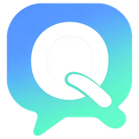

1
连上 QQ检查中
群崽自己不登录 QQ。它靠内置的 NapCat（就是「QQ 桥接」）登录你的号，第一次要扫码，登录一次之后会记住。
正在读取状态…

群崽 QunZai QQ 智能体监控台 v1.4.15三步让它上岗。做完一步这里会自动打勾；没做完会告诉你该点哪里。
群崽自己不登录 QQ。它靠内置的 NapCat（就是「QQ 桥接」）登录你的号，第一次要扫码，登录一次之后会记住。
默认用 DeepSeek 网页版：群崽会拉起一个浏览器窗口，你在里面登录一次 DeepSeek 账号即可，不用 API Key、不花钱。想用 API 也能换。
打开之后，别人发消息它才会回。默认全部会话都回，也可以只在指定群里回、限频率、设免打扰时段。
接下来去「会话」看它在跟谁聊，去「实时动态」看每一句收发。人设（提示词）在「模型提供商 → 当前大脑的参数」里改，回复规则和脾气在「AI 回复」里改。
群崽能用三种方式接上 QQ。同一时间只启用一种，打开一个另一个会自动关掉。
群崽用哪个大脑回消息。同一时间只启用一种，默认是 DeepSeek 网页版；下面那张面板填它对应的参数，填完点右上角「保存」。
下面只显示当前选中的大脑对应的参数；要换大脑，点上面那张卡片上的开关。
首次使用会弹出一个 Edge 窗口，请扫码登录 DeepSeek；登录一次后会长期复用。
它最近聊过的人和群，按最后一条消息时间排。
每一句收发都在这儿，收到、回复、跳过、出错都会写一行。
决定哪些消息会被回复、回复的边界和频率
关掉之后群里 @ 它也不回；点一下立刻生效，也可以点右上角「保存」一起提交。
同一会话两次自动回复的最小间隔；取消勾选 = 不冷却。
群崽什么时候自己开口、说什么、说多频繁
两个开关：感兴趣时插话、冷场时主动开口。它们会真的发消息，默认关闭。（长期记忆功能已移除：机器人不再记录和引用历史记忆）
频率不是礼貌问题：QQ 对高频发送会判骚扰（result=120）。默认每小时 2 条、每天 8 条，已经不算保守。
防刷屏、违禁词、欢迎新人、深夜禁言
防刷屏、拦广告、管违禁词、欢迎新人、深夜宵禁。默认全关——开关打开才会生效；主人（上面 QQ 接入里填的指令发送者）永远不受管。
让它回复时能带图，表情从哪来、怎么用
机器人自动收藏群友们发的商城表情/图片当素材库，AI 聊天时自己看着办发表情包（提示词内置「表情包能力」，告诉它怎么触发、什么时候发）。给机器人私聊丢几个表情包或在群里发，它马上收藏。
另外内置了一套在线表情图库（梗鲸 · DeepSeek娘，约 2300 张）。群友素材里挑不到时，AI 会按关键词去这套图里找，用到哪张下哪张，只缓存在本机。图库来自第三方站点，不可达时自动跳过，不影响聊天。
群崽通过什么方式连上你的 QQ 号
官方机器人由腾讯直连，无需扫码、不用装运行时。但官方限制多：群里只能收到 @机器人 的消息；主动发消息个人额度仅 4 条/月；回复要在收到消息后 5 分钟内；消息里带链接需要 ICP 备案。适合当轻量问答机器人，完整聊天能力请用 OneBot 模式。
保存后会自动按新配置重连 QQ，不用重启服务；若没连上，先检查电脑上的 OneBot 运行时是否已启动、端口是否一致。
安卓版没有内置 Windows 版 QQ 运行时，所以「QQ 桥接」那一栏已隐藏。请在电脑上装一个 OneBot 11 兼容运行时（如 NapCat 或 SnowLuma），在下面填它的 WebSocket 地址（例如 ws://192.168.1.10:3001），群崽就能连上去。
真正登录 QQ、把消息转给群崽的那个程序（OneBot 运行时）
「QQ 桥接」就是真正登录 QQ、把消息转成群崽能读的 OneBot 11 的那个程序。群崽自己不登录 QQ。安装包里已经内置了一份 NapCat，开箱即用；你也可以换成自己找的那一份。
想试试另一套运行时？这里有一份 SnowLuma 官网（下载页，GitHub 打不开时走官网）。它的许可不允许群崽把它打进安装包，所以这里只放官方地址——自己下载解压后，把上面的「用哪一份」选成「（自定义）」，再把解压目录填进去就能用。
第一次用内置那份时，它会弹二维码让你扫码登录 QQ（只支持扫码，这是它的限制）。二维码大约 2 分钟就会失效，扫慢了就点「重新生成二维码」。QQ 偶尔会判定登录态失效（换设备、异地登录、长时间没上线），那种时候需要重新扫一次码——这不是群崽能绕过的。
有新版本时怎么提醒、从哪下载
发现新版本后会先询问“更新 / 不更新”，你同意后才下载；下载完成后还会再确认是否安装。不会静默更新。
版本、开源协议、联系方式和数据说明
群崽 QunZai v1.4.15 · MIT 开源 · 创建于 2026 年 10 月 · 玩具级学习作品，非生产级产品
· 本项目不是反代、没有第三方中转、没有逆向 DeepSeek 网页；原理是用 Node 连接本机浏览器调试端口（CDP）模拟操作，这与反代一样均违反 DeepSeek 用户协议，账号可能被临时限制或封禁。
· 它会把 AI 生成的内容自动发到 QQ，无审核无黑名单，请勿用于骚扰、刷屏、恶作剧，建议使用小号。
· 运行时会自动拉起 Edge 并连接调试端口，可能被杀软误报为木马；源码公开可自行审计，确认为误报请加白名单。
· 本软件仅学习使用，请在 24h 内删除。它是玩具，试过就好。MIT 协议并不禁止你留着——作者只是希望它别被拿去干坏事，更希望你先自己看懂源码再决定要不要留。
· 数据全部只在本机 D:\群崽\data，无任何遥测与联网上传。
· 使用本项目造成的一切后果（账号被封、群被踢、损失、纠纷等）由使用者自行承担，作者不承担责任。
官网 blushhorizon.github.io/QunZai · 源码 github.com/BlushHorizon/QunZai · 交流群 1128593359（暗号 qunzai520） · ☕ 支持群崽 · 爱发电 · 问题反馈：GitHub Issues